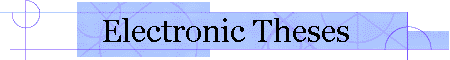

|
 About | Browse | Search | Caltech Student Instructions |
Type of Document Dissertation Author Bauer, Thomas Patrick URN etd-08122005-133355 Persistent URL http://resolver.caltech.edu/CaltechETD:etd-08122005-133355 Title Low-thrust perturbation guidance Degree PhD Option Aeronautics Advisory Committee
Advisor Name Title Thomas Kirk Caughey Committee Chair E.E. Zukoski Committee Member F. Culick Committee Member Homer Joseph Stewart Committee Member Keywords
- none
Date of Defense 1982-05-25 Availability restricted Abstract Low-thrust perturbation guidance, as applied to the minimum time problem of an Earth to Mars rendezvous, has been reexamined and shown to perform orders of magnitude better, as measured by the terminal state error, than previous studies indicated. The orbits of Earth and Mars were assumed to be inclined and elliptical. The only forces considered were the Sun's gravity and that of the constant thrust rocket engine.
First order necessary conditions of the calculus of variations were developed for the nominal trajectory. The resulting nonlinear two-point boundary value problem was solved with the Backward Sweep Method. Feedback gain related and trajectory information is stored on a file during the optimization of the nominal trajectory to be retrieved later in the guidance programs by a high order interpolator.
Two guidance schemes, Time-To-Go Guidance and Minimum Distance Guidance, were investigated for several initial perturbations in velocity and position. The performance of the two schemes was found to be clearly acceptable although not quite as good as reoptimization. The two schemes are equivalent in performance. Moreover, a simplified version of the schemes, Current Time Guidance, was found to be comparable in performance to the more elaborate guidance schemes.
A comparison of the current results with those of previous studies was made showing that terminal state errors can be reduced 100 to 10,000 times more than found earlier. This apparent improvement may possibly be explained by the use of a high fidelity integrator and other enhancements implemented in the software, although algorithm and programming mistakes in the earlier studies are suspected.
A similar minimum time problem, that of a two-dimensional Earth to Mars orbit transfer using a solar sail, was also reexamined. The optimized trajectory was found to be very similar to those obtained by most earlier studies. A recent report which prompted the study was found to have an error in a transversality condition causing anomalous results.
Files
Filename Size Approximate Download Time (Hours:Minutes:Seconds)
28.8 Modem 56K Modem ISDN (64 Kb) ISDN (128 Kb) Higher-speed Access Bauer_tp_1982.pdf 6.76 Mb 00:31:17 00:16:05 00:14:04 00:07:02 00:00:36 indicates that a file or directory is accessible from the campus network only and must not be distributed to non-campus persons.